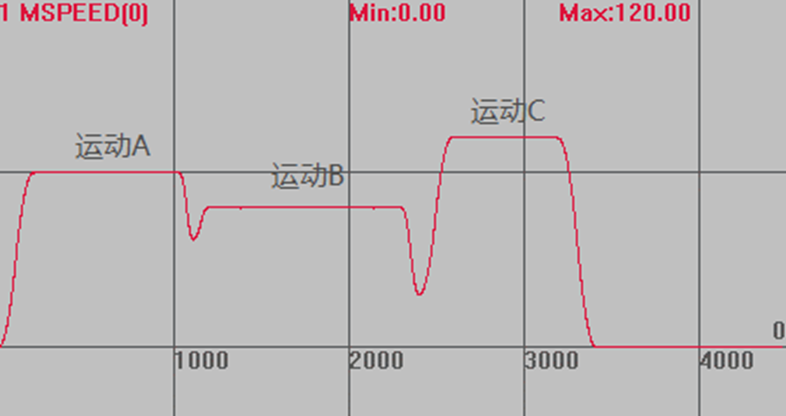

|
类型 |
多轴运动指令 |
|
描述 |
直线插补运动，相对运动一段距离，使用SP限速 自定义速度的连续插补运动可以使用SP后缀的指令，见*SP描述。 |
|
语法 |
MOVESP(distance1 [,distance2 [,distance3 [,distance4...]]]) distance1：第一个轴运动距离 distance2：下一个轴运动距离 |
|
适用控制器 |
通用 |
|
例子 |
BASE(0) DPOS=0 ATYPE=1 UNITS=100 ACCEL=1000 DECEL=1000 SRAMP=100 MERGE=ON '打开连续插补 SPEED=100 '运行速度100 FORCE_SPEED=80 '限制速度80 STARTMOVE_SPEED=60 '起始速度60 ENDMOVE_SPEED=30 '终止速度30 TRIGGER '自动触发示波器 MOVE(100) '运动A，不使用SP限速 MOVESP(100) '运动B，使用SP限速 FORCE_SPEED=120 '限制速度120 ENDMOVE_SPEED=30 '终止速度30 MOVESP(100) '运动C，使用SP限速
速度轨迹 MSPEED(0)垂直刻度100  不使用SP指令时，运行速度为SPEED，使用SP指令后，运行速度为FORCE_SPEED。 当STARTMOVE_SPEED和ENDMOVE_SPEED同时设置时，STARTMOVE_SPEED生效。 |
|
相关指令 |